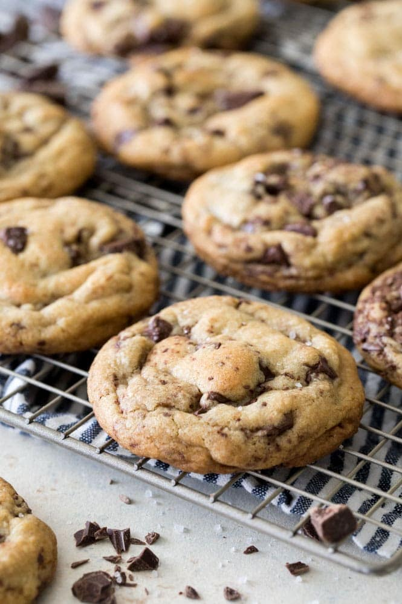

Brown Butter Chocolate Chip Cookies

Infused with the rich, nutty flavor of browned butter, loaded with
semisweet chocolate, and topped off with flaky sea salt, these Brown
Butter Chocolate Chip Cookies are world-class cookies.
What really sets these cookies apart from your standard cookie recipe is
one key magical ingredient: Brown Butter. Brown butter (more formally
known by its French name: Buerre Noisette… fancy!), is simply butter
that’s been cooked until all of the water is cooked out and the milk
solids begin to turn brown. The end result is a rich, flavorful butter
with a nutty, toffee-like aroma. When used in baked goods (especially
cookies) it yields a buttery, rich, flavorful end product.
- 1 cup unsalted butter cut into Tablespoon-sized pieces (225g)
- 1 cup light or dark brown sugar¹ (200g)
- ⅔ cup white sugar (135g)
- 2 large eggs room temperature
- 1 ½ teaspoons vanilla extract
- 2 ¾ cups all-purpose flour (340g)
- 1 teaspoon cornstarch
- 1 teaspoon baking powder
- 1 teaspoon baking soda
- ¾ teaspoon salt
- 10 oz semisweet chocolate² chopped into pieces (285g)
- flaky sea salt for sprinkling optional but so good!
- Once your butter has cooled, add sugars and stir well.
- Add eggs and vanilla extract and stir well.
- In a separate, medium-sized bowl, whisk together flour, cornstarch, baking powder, baking soda and salt (not flaky sea salt).
- Gradually add your flour mixture to butter mixture, stirring until ingredients are completely combined.
- Add chopped chocolate pieces and stir well so that chocolate is well distributed through the batter.
- Cover cookie dough bowl with plastic wrap and chill in the refrigerator for at least 30 minutes.
- About 15 minutes before dough has finished chilling/before you are ready to bake, preheat oven to 350F (175C) and line cookie sheets with parchment paper.
- Once dough has finished chilling scoop by about 2 Tablespoon-sized portions. Gently roll the dough between your palms so that you have a round ball, then place cookie dough at least 2" apart on prepared cookie sheet.
- Bake on 350F (175C) for 10-12 minutes or until edges are just beginning to turn golden brown (cookies should still be quite soft when you remove them from the oven, and may even appear slightly underbaked in center).
- Let cookies cool for about a minute then sprinkle lightly with flaky sea salt.
- Allow cookies to cool completely on baking sheet, then enjoy!